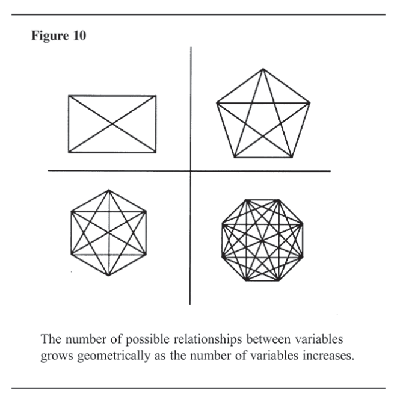

Chapter 7 Structuring Analytical Problems
This chapter discusses various structures for decomposing and externalizing complex analytical problems when we cannot keep all the relevant factors in the forefront of our consciousness at the same time. Decomposition means breaking a problem down into its component parts. Externalization means getting the problem out of our heads and into some visible form that we can work with.
* * * * * * * * * * * * * * * * * * *
The discussion of working memory in Chapter 3 indicated that “The Magic Number Seven—Plus or Minus Two”80 is the number of things most people can keep in working memory at one time. To experience firsthand this limitation on working memory while doing a mental task, try multiplying in your head any pair of two-digit numbers- for example, 46 times 78. On paper, this is a simple problem, but most people cannot keep track of that many numbers in their head. The limited capacity of working memory is the source of many problems in doing intelligence analysis. It is useful to consider just how complicated analysis can get, and how complexity might outstrip your working memory and impede your ability to make accurate judgments. Figure 10 illustrates how complexity increases geometrically as the number of variables in an analytical problem increases. The four-sided square shows that when a problem has just four variables, there are six possible interrelationships between those variables. With the pentagon, the five variables have 10 possible interrelationships. With six and eight variables, respectively, there are 15 and 28 possible interrelationships between variables. The number of possible relationships between variables grows geometrically as the number of variables increases. There are two basic tools for dealing with complexity in analysis— decomposition and externalization.
85

Figure1o
The number of possible relationships between variables grows geometrically as the number of variables increases.
Decomposition means breaking a problem down into its component parts. That is, indeed, the essence of analysis. Webster’s Dictionary defines analysis as division of a complex whole into its parts or elements.81 The spirit of decision analysis is to divide and conquer: Decompose a complex problem into simpler problems, get one’s thinking straight in these simpler problems, paste these analyses together with a logical glue. . .82 Externalization means getting the decomposed problem out of one’s head and down on paper or on a computer screen in some simplified form that shows the main variables, parameters, or elements of the problem and how they relate to each other. Writing down the multiplication problem, 46 times 78, is a very simple example of externalizing an ana-
86 lytical problem. When it is down on paper, one can easily manipulate one part of the problem at a time and often be more accurate than when trying to multiply the numbers in one’s head. I call this drawing a picture of your problem. Others call it making a model of your problem. It can be as simple as just making lists pro and con. This recommendation to compensate for limitations of working memory by decomposing and externalizing analytical problems is not new. The following quote is from a letter Benjamin Franklin wrote in 1772 to the great British scientist Joseph Priestley, the discoverer of oxygen:
In the affair of so much importance to you, wherein you ask my advice, I cannot for want of sufficient premises, advise you what to determine, but if you please I will tell you how. When those difficult cases occur, they are difficult, chiefly because while we have them under consideration, all the reasons pro and con are not present to the mind at the same time, but sometimes one set present themselves, and at other times another, the first being out of sight. Hence the various purposes or inclinations that alternatively prevail, and the uncertainty that perplexes us. To get over this, my way is to divide half a sheet of paper by a line into two columns; writing over the one Pro, and over the other Con. Then, during three or four days of consideration, I put down under the different heads short hints of the different motives, that at different times occur to me, for or against the measure. When I have thus got them all together in one view, I endeavor to estimate their respective weights; and where I find two, one on each side, that seem equal, I strike them both out. If I find a reason pro equal to some two reasons con, I strike out the three. . . and thus proceeding I find at length where the balance lies; and if, after a day or two of further consideration, nothing new that is of importance occurs on either side, I come to a determination accordingly.
87
And, though the weight of reasons cannot be taken with the precision of algebraic quantities, yet when each is thus considered, separately and comparatively, and the whole lies before me, I think I can judge better, and am less liable to make a rash step, and in fact I have found great advantage from this kind of equation. . . . 83
It is noteworthy that Franklin over 200 years ago ident2ified the problem of limited working memory and how it affects one’s ability to make judgments. As Franklin noted, decision problems are difficult because people cannot keep all the pros and cons in mind at the same time. We focus first on one set of arguments and then on another, “. . . hence the various purposes and inclinations that alternatively prevail, and the uncertainty that perplexes us.” Franklin also identified the solution—getting all the pros and cons out of his head and onto paper in some visible, shorthand form. The fact that this topic was part of the dialogue between such illustrious individuals reflects the type of people who use such analytical tools. These are not aids to be used by weak analysts but unneeded by the strong. Basic limitations of working memory affect everyone. It is the more astute and careful analysts who are most conscious of this and most likely to recognize the value gained by applying these very simple tools. Putting ideas into visible form ensures that they will last. They will lie around for days goading you into having further thoughts. Lists are effective because they exploit people’s tendency to be a bit compulsive—we want to keep adding to them. They let us get the obvious and habitual answers out of the way, so that we can add to the list by thinking of other ideas beyond those that came first to mind. One specialist in creativity has observed that “for the purpose of moving our minds, pencils can serve as crowbars”84—just by writing things down and making lists that stimulate new associations. With the key elements of a problem written down in some abbreviated form, it is far easier to work with each of the parts while still keeping the problem as a whole in view. Analysts can generally take account of more factors than when making a global judgment. They can manipulate
88 individual elements of the problem to examine the many alternatives available through rearranging, combining, or modifying them. Variables may be given more weight or deleted, causal relationships reconceptualized, or conceptual categories redefined. Such thoughts may arise spontaneously, but they are more likely to occur when an analyst looks at each element, one by one, and asks questions designed to encourage and facilitate consideration of alternative interpretations.
Problem Structure
Anything that has parts also has a structure that relates these parts to each other. One of the first steps in doing analysis is to determine an appropriate structure for the analytical problem, so that one can then identify the various parts and begin assembling information on them. Because there are many different kinds of analytical problems, there are also many different ways to structure analysis. Lists such as Franklin made are one of the simplest structures. An intelligence analyst might make lists of relevant variables, early warning indicators, alternative explanations, possible outcomes, factors a foreign leader will need to take into account when making a decision, or arguments for and against a given explanation or outcome. Other tools for structuring a problem include outlines, tables, diagrams, trees, and matrices, with many sub-species of each. For example, trees include decision trees and fault trees. Diagrams includes causal diagrams, influence diagrams, flow charts, and cognitive maps. Consideration of all those tools is beyond the scope of this book, but several such tools are discussed. Chapter 11, “Biases in Perception of Cause and Effect,” has a section on Illusory Correlation that uses a (2x2) contingency table to structure analysis of the question: Is deception most likely when the stakes are very high? Chapter 8, “Analysis of Competing Hypotheses,” is arguably the most useful chapter in this book. It recommends using a matrix to array evidence for and against competing hypotheses to explain what is happening now or estimate what may happen in the future. The discussion below also uses a matrix to illustrate decomposition and externalization and is intended to prepare you for the next chapter on “Analysis of Competing Hypotheses.” It demonstrates how to apply
89 these tools to a type of decision commonly encountered in our personal lives.
Car Purchase Matrix
In choosing among alternative purchases, such as when buying a car, a new computer, or a house, people often want to maximize their satisfaction on a number of sometimes-conflicting dimensions. They want a car at the lowest possible price, with the lowest maintenance cost, highest resale value, slickest styling, best handling, best gas mileage, largest trunk space, and so forth. They can’t have it all, so they must decide what is most important and make tradeoffs. As Ben Franklin said, the choice is sometimes difficult. We vacillate between one choice and another, because we cannot keep in working memory at the same time all the characteristics of all the choices. We think first of one and then the other. To handle this problem analytically, follow the divide-and-conquer principle and “draw a picture” of the problem as a whole that helps you identify and make the tradeoffs. The component parts of the car purchase problem are the cars you are considering buying and the attributes or dimensions you want to maximize. After identifying the desirable attributes that will influence your decision, weigh how each car stacks up on each attribute. A matrix is the appropriate tool for keeping track of your judgments about each car and each attribute, and then putting all the parts back together to make a decision. Start by listing the important attributes you want to maximize, as shown for example in Figure 11.

90
Next, quantify the relative importance of each attribute by dividing 100 percent among them. In other words, ask yourself what percentage of the decision should be based on price, on styling, etc. This forces you to ask relevant questions and make decisions you might have glossed over if you had not broken the problem down in this manner. How important is price versus styling, really? Do you really care what it looks like from the outside, or are you mainly looking for comfort on the inside and how

Figure 12
Price
Operating Cost
Styling
Comfort
Handling
Safety
100%
Total
it drives? Should safety be included in your list of important attributes? Because poor gas mileage can be offset by lower maintenance cost for repairs, perhaps both should be combined into a single attribute called operating cost. This step might produce a result similar to Figure 12, depending on your personal preferences. If you do this together with your spouse, the exact basis of any difference of opinion will become immediately apparent and can be quantified.
91

Next, identify the cars you are considering and judge how each one ranks on each of the six attributes shown in Figure 12. Set up a matrix as shown in Figure 13 and work across the rows of the matrix. For each attribute, take 10 points and divide it among the three cars based on how well they meet the requirements of that attribute. (This is the same as taking 100 percent and dividing it among the cars, but it keeps the numbers lower when you get to the next step.) You now have a picture of your analytical problem—the comparative value you attribute to each of the principal attributes of a new car and a comparison of how various cars satisfy those desired attributes. If you have narrowed it down to three alternatives, your matrix will look something like Figure 13: When all the cells of the matrix have been filled in, you can then calculate which car best suits your preferences. Multiply the percentage value you assigned to each attribute by the value you assigned to that attribute for each car, which produces the result in Figure 14. If the percentage values you assigned to each attribute accurately reflect your preferences, and if each car has been analyzed accurately, the analysis shows you will gain more satisfaction from the purchase of Car 3 than either of the alternatives.
92

Figure 14
Car 3
Car 2
Car 1
% Value
Operating Cost
Styling
Comfort
Handling
Safety
322.5
Totals
At this point, you do a sensitivity analysis to determine whether plausible changes in some values in the matrix would swing the decision to a different car. Assume, for example, that your spouse places different values than you on the relative importance of price versus styling. You can insert your spouse’s percentage values for those two attributes and see if that makes a difference in the decision. (For example, one could reduce the importance of price to 20 percent and increase styling to 30 percent. That is still not quite enough to switch the choice to Car 2, which rates highest on styling.) There is a technical name for this type of analysis. It is called Multiattribute Utility Analysis, and there are complex computer programs for doing it. In simplified form, however, it requires only pencil and paper and high school arithmetic. It is an appropriate structure for any purchase decision in which you must make tradeoffs between multiple competing preferences.
93
Conclusions
The car purchase example was a warmup for the following chapter. It illustrates the difference between just sitting down and thinking about a problem and really analyzing a problem. The essence of analysis is breaking down a problem into its component parts, assessing each part separately, then putting the parts back together to make a decision. The matrix in this example forms a “picture” of a complex problem by getting it out of our head and onto paper in a logical form that enables you to consider each of the parts individually. You certainly would not want to do this type of analysis for all your everyday personal decisions or for every intelligence judgment. You may wish to do it, however, for an especially important, difficult, or controversial judgment, or when you need to leave an audit trail showing how you arrived at a judgment. The next chapter applies decomposition, externalization, and the matrix structure to a common type of intelligence problem.
94